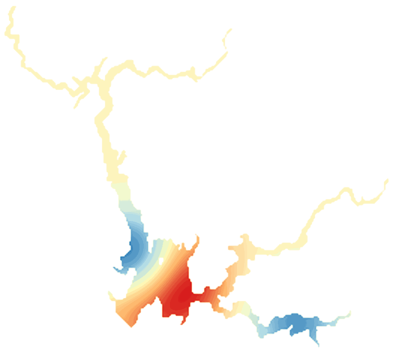

LakeScope › CA
Lake Oroville today
Updated 2026-11-14 - Atlas Labs
Clear water, 64°F water, level falling, 2 ft above normal, calm this morning.
Water level
731.47 ft
California Dept. of Water Resources - 2026-11-12
7-day trend: falling (-2.43 ft). Compared with normal for this date: +1.5 ft (same weeks, 2016-2025).
Water clarity and algae
Clear water Last clear view: a few days ago.
Surface temperature
64°F
seen from space on 2026-11-12

Ice
Open - 0% ice cover
Estimate from weather and satellite, not a measurement. Check the ice yourself before going on it.
Weather, next 3 days
| Day | Sky | High / low | Wind | Rain |
|---|---|---|---|---|
| Saturday | Partly Sunny | 56 / 51°F | 5 mph SSE | 3% |
| Sunday | Rain | 56 / 48°F | 7 mph ESE | 99% |
| Monday | Chance Light Rain | 51 / 42°F | 2 mph SSE | 48% |
Sunrise 06:49 - sunset 16:50 - Waxing crescent. National Weather Service.
Get the LakeScope app: alerts and the 3-D view of Lake Oroville